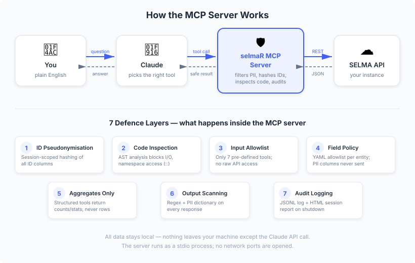

Overview
The selmaR MCP server exposes SELMA student management data to Claude via the Model Context Protocol. It runs as a local JSON-RPC 2.0 stdio process with 7 defence layers protecting PII.
This vignette shows three common usage scenarios.
How It Works
You ask a question in plain English. Claude picks the right tool, the MCP server fetches data from your SELMA instance, strips PII, and returns a safe result. All data stays local.

Setup
Example 1: Connecting and Exploring Data
User prompt: “What data do I have access to?”
Claude calls list_entities:
Response:
Available entities (15):
[{"entity":"students","description":"Student records (demographics, status, visa, nationality)","policy_mode":"allow","policy_fields":22},
{"entity":"enrolments","description":"Enrolment records linking students to intakes (status, dates, funding)","policy_mode":"allow","policy_fields":22},
{"entity":"intakes","description":"Intake/cohort definitions (programme, dates, capacity)","policy_mode":"allow","policy_fields":16},
...]Then Claude calls describe_entity to understand the data
shape:
{"jsonrpc":"2.0","id":2,"method":"tools/call",
"params":{"name":"describe_entity","arguments":{"entity":"students"}}}Response:
Entity: students
Rows: 1,247
Columns: 22 (policy: allow)
Column summaries:
[{"column":"id","type":"character","n_missing":0,"n_unique":1247},
{"column":"status","type":"character","n_missing":0,"n_unique":4,"top_values":"Active (892), Graduated (231), Withdrawn (98), Deferred (26)"},
{"column":"gender","type":"character","n_missing":12,"n_unique":3,"top_values":"Female (687), Male (543), Non-binary (5)"},
{"column":"countryofbirth","type":"character","n_missing":3,"n_unique":42,"top_values":"New Zealand (645), India (187), China (89)"},
...]Note: PII fields (surname, forename, email, DOB, NSN) are not present
— the field policy filters them before they reach Claude. IDs are
pseudonymised (e.g. S-a3f2c1b9 instead of
1001).
Example 2: Intake Queries with Aggregation
User prompt: “How many students are enrolled per programme, broken down by status?”
Claude calls get_entity_summary with grouping:
{"jsonrpc":"2.0","id":3,"method":"tools/call",
"params":{"name":"get_entity_summary",
"arguments":{"entity":"enrolments","group_by":["enrstatus"]}}}Response:
Entity: enrolments
Rows after filtering: 2,834
Groups (enrstatus): 9 unique
Group counts (top 30):
enrstatus count
1 C 1247
2 FC 523
3 FI 312
4 WR 198
5 WS 87
6 D 64
7 ER 43
8 X 289
9 P 71For a deeper drill-down, Claude uses execute_r:
{"jsonrpc":"2.0","id":4,"method":"tools/call",
"params":{"name":"execute_r","arguments":{
"code":"pipeline <- selma_student_pipeline(selma_enrolments(), selma_students(), selma_intakes())\npipeline |> filter(enrstatus %in% SELMA_FUNDED_STATUSES) |> count(intake_name, enrstatus) |> arrange(desc(n)) |> head(20)"
}}}Response:
[enrolments: 2,834 rows x 22 cols]
[students: 1,247 rows x 22 cols]
[intakes: 156 rows x 16 cols]
# A tibble: 20 × 3
intake_name enrstatus n
<chr> <chr> <int>
1 NZ Diploma in Web Dev 2025-S1 C 45
2 NZ Cert in IT Essentials 25-Q1 C 38
3 NZ Diploma in Web Dev 2024-S2 FC 34
...Example 3: Organisation Overview with EFTS
User prompt: “Give me a funding overview for 2025.”
Claude calls get_efts_report:
{"jsonrpc":"2.0","id":5,"method":"tools/call",
"params":{"name":"get_efts_report","arguments":{"year":2025}}}Response:
EFTS Report — 2025
(excluding international fee-paying)
# A tibble: 8 × 14
funding_source category efts_01 efts_02 efts_03 efts_04 efts_05 efts_06 efts_07 efts_08 efts_09 efts_10 efts_11 efts_12 total
<chr> <chr> <dbl> <dbl> <dbl> <dbl> <dbl> <dbl> <dbl> <dbl> <dbl> <dbl> <dbl> <dbl> <dbl>
1 01 Government Funded A 12.5 14.2 14.2 14.2 14.2 13.8 12.1 12.1 13.5 14.2 14.2 12.5 162.
2 01 Government Funded B 8.3 9.1 9.1 9.1 9.1 8.8 7.6 7.6 8.5 9.1 9.1 8.3 114.
...Then Claude creates a visualisation:
{"jsonrpc":"2.0","id":6,"method":"tools/call",
"params":{"name":"execute_r","arguments":{
"code":"components <- selma_components()\nenr <- selma_enrolments()\nfunded <- enr |> filter(enrstatus %in% SELMA_FUNDED_STATUSES)\nfunded_comp <- selma_join_components(components, funded)\nmonthly <- funded_comp |> filter(!is.na(compenrstartdate)) |> mutate(month = floor_date(compenrstartdate, 'month')) |> group_by(month) |> summarise(total_efts = sum(compenrefts, na.rm = TRUE)) |> arrange(month)\nlabels <- paste0('[', paste0('\"', format(monthly$month, '%b %Y'), '\"', collapse = ','), ']')\nvalues <- paste0('[', paste0(round(monthly$total_efts, 2), collapse = ','), ']')\nhtml <- paste0('<!DOCTYPE html><html><head><meta charset=\"utf-8\"><title>Monthly EFTS</title><script src=\"https://cdn.jsdelivr.net/npm/chart.js\"></script></head><body><div style=\"max-width:800px;margin:2rem auto\"><canvas id=\"chart\"></canvas></div><script>new Chart(document.getElementById(\"chart\"),{type:\"bar\",data:{labels:',labels,',datasets:[{label:\"EFTS\",data:',values,',backgroundColor:\"#4e79a7\"}]},options:{responsive:true,plugins:{title:{display:true,text:\"Monthly EFTS — 2025\"}}}});</script></body></html>')\npath <- save_chart(html, 'monthly_efts_2025.html')\nbrowseURL(path)\npath"
}}}Note: writeLines is blocked by the AST
guard, but the workspace provides
save_chart(html, filename) which safely writes HTML files
to the designated output_dir. This function sanitises the
filename (no directory traversal) and only writes to the output
directory.
Security in Action
What happens when Claude tries to bypass controls
If Claude (or a prompt injection) tries to access raw data:
selmaR::selma_students()Response:
[BLOCKED] Your code was rejected before execution.
Blocked constructs found: selmaR::selma_students
Reason: These functions bypass PII controls or access restricted resources.
Use the workspace functions instead (e.g. selma_students(), selma_get_entity()).Configuration Reference
Environment variables
| Variable | Purpose |
|---|---|
SELMAR_PKG_DIR |
Path to selmaR package root |
SELMAR_OUTPUT_DIR |
Output directory for charts/reports |
SELMAR_FIELD_POLICY |
Path to custom field policy YAML |
SELMA_BASE_URL |
Credential override |
SELMA_EMAIL |
Credential override |
SELMA_PASSWORD |
Credential override |
Audit Trail
Every session produces:
-
selma_mcp_audit.jsonl— machine-readable log of every tool call -
selma_mcp_session_{timestamp}.html— human-readable session report
The session report is generated automatically when the server shuts down and includes tool call history, entities accessed, blocked attempts, and PII redaction counts.